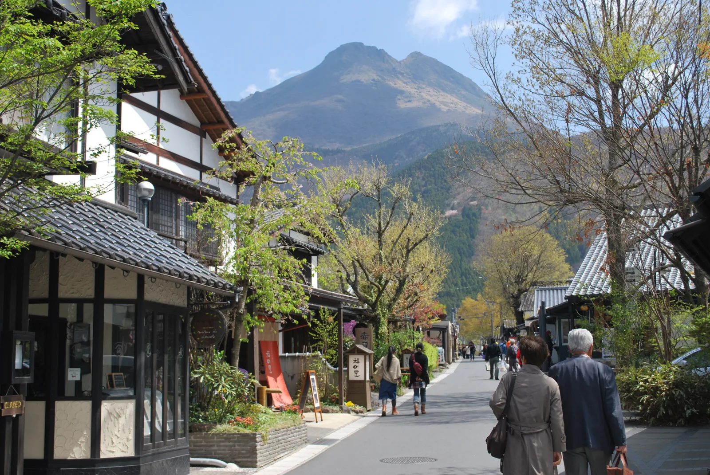
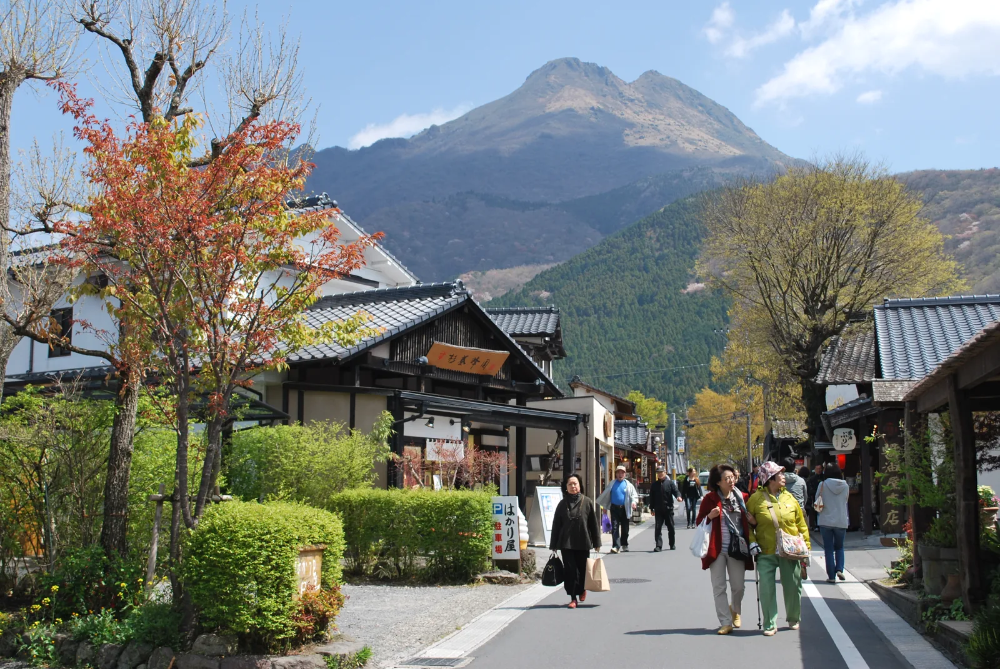

YUFUIN / MEC HUB / CONCEPT 2026.11.08
01
構想案・未実施

湯布院の
旅の入口を
つくる。
旅の入口を
つくる。
Mobility Energy Community
車で訪れたくなる建物と食・体験。
そこから、まちへ歩き出す。
そこから、まちへ歩き出す。
01 / VALUE
02
目的地になる建物が、
回遊の起点になる
回遊の起点になる
構想案・未実施

来たい
地元の食、遊び、季節の体験
預けたい
荷物と車を置き、旧商店街へ
02 / MOBILITY · ENERGY · COMMUNITY
03
MECの３機能を、一つの体験に
構想案・未実施
M
Mobility
移動をつなぐ
E
Energy
充電・電源を備える
C
Community
地域と過ごす
駐車・手荷物・宿送迎案内 EV充電・非常時電源の検討 地元の食・体験・住民利用
03 / OBSERVED GAP
04
15時以降の到着と、
手荷物配送の締切が重なる
手荷物配送の締切が重なる
確認済みのサービス条件／最新条件は利用前に再確認
15:00
ゆふいんチッキ
駅から宿への配送受付終了
駅から宿への配送受付終了
15:00 17:00 18:30
空港バスの由布院駅前着の例
2026年11月30日までのダイヤ
2026年11月30日までのダイヤ
提案：到着前に荷物と迎車の条件を案内。
延長・新設は希望件数を測って判断。
延長・新設は希望件数を測って判断。
04 / SERVICE CONNECTION
05
駐車の次に、旅をつなぐ
サービス接続の構想図。位置・距離・運行ルートを表す地図ではありません
到着
車・鉄道・バス
→
ハブ
駐車・案内・荷物
→
まち
食・遊び・商店街
→
宿／帰路
送迎・荷物受取
予約と案内を先につなぎ、移動・荷物の実運用は既存事業者と合意する
05 / LOCAL CIRCULATION
06
旧商店街まで、
足と消費が届くか
足と消費が届くか
構想案・未実施

施設で終わらせない
店舗の体験予約・食べ歩き案内
地元の作り手による小さな催し
帰りの足と荷物受取の安心
地元の作り手による小さな催し
帰りの足と荷物受取の安心
評価：訪問店舗数と地区別消費を、同じ旅行組で測る
06 / SITE CONDITIONS
07
土地を選ぶ前に、
共存の条件をそろえる
共存の条件をそろえる
図面記載と確認待ちを分離。土地取得・賃借・建築の決定はしていません
配置と動線
商店街との共存・公共性
市営住宅１軒の対処
建物配置・立面と土地の必要性
市営住宅１軒の対処
建物配置・立面と土地の必要性
原資料で確認
2026年7月9日の
出店計画打合せ資料
出店計画打合せ資料
総面積・境界・借地/取得条件
建築規制・費用は照合待ち
建築規制・費用は照合待ち
07 / OPTIONS
08
４つの選択肢を、同じ条件で比べる
構想案・未実施
現状維持
新規投資なし
接続上の不便が残る
A 接続改善
既存施設＋案内連携
少額で需要を測る
B 小規模ハブ
建物＋食・体験＋窓口
運営と土地条件が前提
C 分散拠点
既存店舗・宿をつなぐ
新築を抑え連携運営を組む
08 / FIRST STEP
09
まず接続を試し、
建物の投資判断へ
建物の投資判断へ
構想案・未実施
30
日：現地と条件を確認
90
日：小さく接続実証
365
日：継続・投資を判断
開始合意日からの工程案。用地・許認可・運営体制が整うまで建設は確約しない。
09 / MEASUREMENT
10
来訪者数だけでは、
成功を決めない
成功を決めない
構想案・未実施
旅行者
断念した訪問先・待ち時間
地域経済
地区別消費・地元調達額
住民
生活交通の遅れ・交錯
事業
粗利・人時・荷物事故
10 / GOVERNANCE
11
運営者と責任を決めてから始める
構想案・未実施
事業主体
投資・収支・現場責任
交通・宿・配送
予約・運行・荷物の責任分界
行政・地権者・地域
用地・安全・住民利益の合意
いずれも役割案。担当者、予算上限、契約、保険、許可は未確定。
11 / DECISION GATES
12
伸ばす。変える。止める。
構想案・未実施
CONTINUE
回遊と地元消費が伸び、住民負担と収支が許容範囲
PIVOT
建物内で消費が完結するなら、送客・体験・導線を変更
STOP
安全・住民生活・採算の合意条件を満たせない
12 / NEXT DECISION
13
最初に決めるのは、
試す範囲と責任者
試す範囲と責任者
構想案・未実施

Aの接続実証を設計
Bの施設需要・採算は別途検証
旧商店街と住民の受益を確認
費用上限と停止条件を合意
旧商店街と住民の受益を確認
費用上限と停止条件を合意
決定者：事業主体と関係者
期限：次回協議で設定／着手前に確定
期限：次回協議で設定／着手前に確定